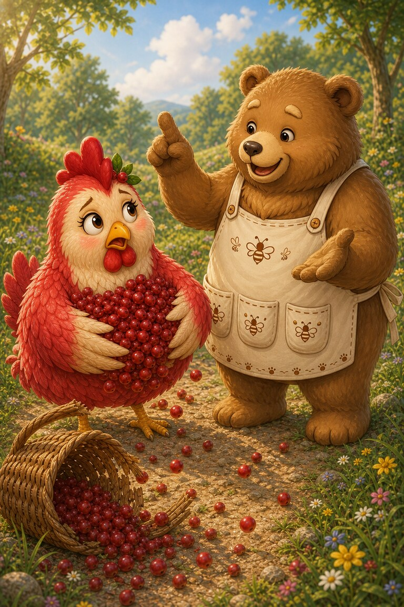
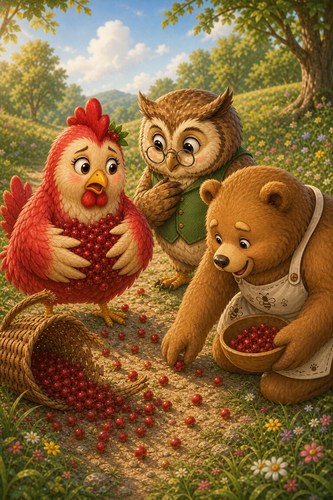
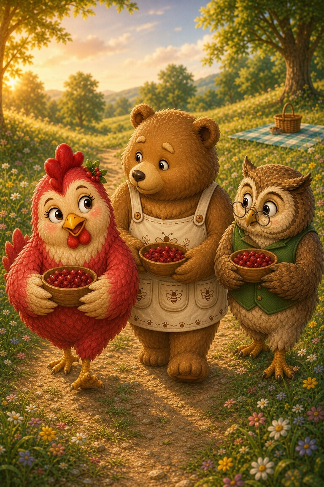

Page 1 of 4
Hen-Berry carries a basket of berries toward the picnic when the handle snaps. Red fruit rolls in every direction, and she tries to gather it all alone.
A four-page story about spilled berries and the difference between giving advice and really helping.
Hen-Berry carries a basket of berries toward the picnic when the handle snaps. Red fruit rolls in every direction, and she tries to gather it all alone.

Ted-E-Bear begins to share advice, but Hen-Berry’s wings are already full. “Could you pick up the berries first?” she asks.

Wise Owl stops to listen. She hears that Hen-Berry wants help, not a new basket plan, so everyone gathers the scattered fruit together.

They help carry the berries in smaller bowls. Hen-Berry arrives later than planned but far less tired—and Ted remembers to ask before offering advice.
They helped each other.
SnackPack Sentences & Spelling has many more short reads like this one, plus the Reading Trail, word packs and literacy games.
Next storyStripe‑Scout’s Trail Clues
Know a family or class who would enjoy it?